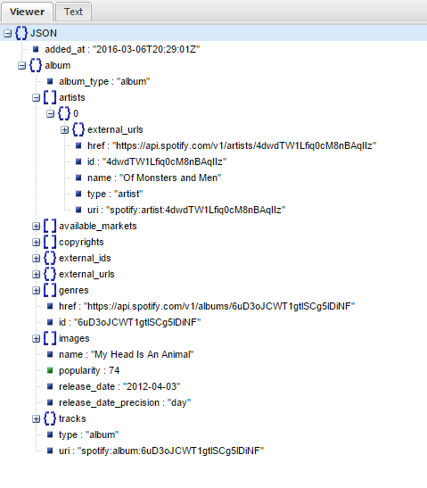

Hello! Welcome to Part 2 of my tutorial to get you up and running with the Spotify Web API. Before starting Part 2, please work your way through Part 1 of my tutorial. In Part 1 of the tutorial, we got familiar with the file structure, Node.js, the authentication path, and the Track API. Here are the topics that we'll be covering in Part 2 of this tutorial:
As Part 1 was more about getting you comfortable with the tools and walking you through the authentication process, Part 2 will strictly focus on how to access a few of the different endpoints that are available. After getting comfortable with all of these API endpoints, you should have a solid understanding of how to make your application work with the Spotify API.
Hopefully you find this guide helpful!
Before we jump into adding endpoints, we will need to adjust our helper file helper.js and also our html file index.html. First, let's add the below code in red below to index.html
<!doctype html> <html> <head> <title>SpotApp</title> </head> <body> <h1>My Spot App</h1> <button id="login_btn">Login</button> <br/> <button id="getToken_btn">Get Token</button> <br/> <button id="tracksAPI_btn">Run Tracks API</button> <br/> <button id="albumsAPI_btn">Run Albums API</button> <br/> <button id="artistAPI_btn">Run Artist API</button> <br/> <button id="artistsAPI_btn">Run Artist(s) API</button> <hr/> <p>Access Token:</p> <p id="accessToken"><p> <hr/> <script src="helper.js"></script> </body> </html>
This code simply adds a few buttons so that we can now execute the endpoints that we will set up in this tutorial. Note that until we get our helper file updated and all of our API code written into our server.js files, these buttons will do nothing. Next, we are going to update our helper file, helper.js. Paste the code in red below into the helper.js file:
//Part 1: establish listeners
document.getElementById("login_btn").addEventListener("click", function(){
//direct to login
window.location.assign("/login");
});
document.getElementById("tracksAPI_btn").addEventListener("click", function(){
//direct to tracks with token on the end
window.location.assign("/tracks/" + getToken());
});
document.getElementById("albumsAPI_btn").addEventListener("click", function(){
//direct to albums with token on the end
window.location.assign("/albums/" + getToken());
});
document.getElementById("artistAPI_btn").addEventListener("click", function(){
//direct to albums with token on the end
window.location.assign("/artist/" + getToken());
});
document.getElementById("artistsAPI_btn").addEventListener("click", function(){
//direct to albums with token on the end
window.location.assign("/artists/" + getToken());
});
document.getElementById("getToken_btn").addEventListener("click", getToken);
//Part 2: get the access token from the URL
function getToken(){
//start with the current URL string
var CurrentAccessToken = window.location.href;
//find #access_token= in the string
var string_to_find = "#access_token=";
//get start_from index
var start_from = CurrentAccessToken.search(string_to_find);
//only run if #access_token= is found
if(start_from > 0){
//add length of #access_token= to the start_from index
start_from += string_to_find.length;
//set CurrentAccessToken through the end
CurrentAccessToken = CurrentAccessToken.substr(start_from,CurrentAccessToken.length);
document.getElementById("accessToken").textContent = CurrentAccessToken;
//return the Token
return CurrentAccessToken;
} else {
//if not found, return NULL
return NULL;
}
}
The code above adds listeners to the buttons that we created in index.html. For example, the Album API button that we created has the id albumsAPI_btn, so we added a listener with the code: document.getElementById("albumsAPI_btn").addEventListener("click",.... Now that we have our helper.js file updated and new controls on our HTML file index.html, we are ready to start adding to our node.js server file server.js the code that will call the different API endpoints that we will demonstrate in this tutorial.
The first endpoint we are going to add in will be the Albums API Endpoint which is available at /v1/me/albums. Remember that all of the endpoint reference is available here. Though Spotify's reference is helpful, it does not take you carefully through node.js code (which is why this tutorial is helpful!). First, we will add our needed code to our node.js server file server.js, then we will walk through the code, line-by-line to fully understand what is happening. Please paste in the javascript code below immediately after the callback app.get('/tracks/:token'... that we created in Part 1:
app.get('/albums/:token',function(req,res){
//get token from request
var access_token = req.params.token;
//set up options
var options = {
url: 'https://api.spotify.com/v1/me/albums?limit=10',
headers: { 'Authorization': 'Bearer ' + access_token },
json: true
};
// use the access token to access the Spotify Web API
request.get(options, function(error, response, body) {
//create variable for album count
var album_count = body.items.length;
//print 10 track names to console
for(var i=0; i < album_count; i++) {
//print each item to the console
var print_to_console = "Album ID:" + i;
print_to_console += " Name: " + body.items[i].album.name;
console.log(print_to_console);
}
});
//put token back into browser
res.redirect('/#' +
querystring.stringify({
access_token: access_token
}));
});
Let's work our way through this code! We will see that this code is very similar to the code that we had for the Tracks API back in Part 1 of the tutorial. Our first line of code specifies that this GET command is pointed at the route of albums with the code app.get('albums/:token',function(req,res){.... The :token parameter of the route is the authentication token that will be passed to the server with the request. Recall that in order to make requests to this API endpoint, we will always need an authentication token. This token is pulled from the request parameters with the line of code var access_token = req.params.token.
Next, we set up our options object, which will be passed to the request with the code var options = {.... This command takes the following parameters: url, headers, and json. We will set the url with the following code: url: 'https://api.spotify.com/v1/me/albums?limit=10'. You'll notice I added ?limit=10 to this request. The reason for this was to reduce the number of records that came back in the request, since this tutorial is just for demonstration purposes (and we don't want to get overloaded on data). Next, we have the headers parameter, where we pass in our authorization token with the code: headers: { 'Authorization': 'Bearer ' + access_token }. Finally we set the parameter json to true, since we will be passing a json object.
Finally, we get to the request part of the code. We call the request with the code: request.get(options, function(error, response, body) {.... The options object is the first argument that is passed in and we already defined this object in the code above. The body is where all of the data that this request comes back with will be written to. For purposes of this demonstration, I wrote the code to write back up to the first 10 albums that are in my saved albums list. To do this, I first defined a variable called album_count in my code with the code: var album_count = body.items.length. I learned that the body would come back with a array member called items by reading the endpoint documentation. In the next section, we will explore how to parse a JSON object to explore the structure that is returned. Then, I simply used the method length, which is native to JavaScript to get the length of the items array. Now that I have the number of albums, I can use a simple loop to loop through them and print them to the server-side console. Within my loop, I used the code body.items[i].album.name in order to access the name of each album in the items array. To run this code, I started up node.js on server.js, then navigated to localhost:3000 in my browser. Next, I clicked Login then Get Token then Run Albums API and got a result to the command prompt that looked like this: When I run this code, I get the following result in my command prompt:
C:\nodeprojects\spot> C:\nodeprojects\spot>node server.js Listening on 3000... Album ID:0 Name: 2CELLOS Album ID:1 Name: LIVE FROM VATNAGARÐAR Album ID:2 Name: My Head Is An Animal Album ID:3 Name: Prayer Album ID:4 Name: Pitch Perfect Soundtrack (Special Edition)
As you can see from the output, I only have 5 saved albums in Spotify. If you have more than 10, remember that this list will be limited to 10, since we used a limit when we made the request to the API. The last bit of code that we have for accessing this endpoint is the the line res.redirect('/#' + querystring.stringify({access_token: access_token})), which places the access_token back into the browser URL for the next API call to use.
The next endpoint we are going to add to our application is to get an artist from endpoint /v1/artists/{id}. Since this endpoint is based on having an artist id in hand to pass to the endpoint, instead of just relying on the logged-in user's saved items, we will need to retrieve an artist's ID in order to pass to the endpoint. The first part of this section will discuss how I found an artist ID to use and make suggestions on elegant ways to integrate this process into your application. The second part of this section will be to write the actual code.
Find an Artist ID
In this section, I'm going to walk you through how I found an artist ID for using in this tutorial. The way I went about this was to parse through JSON data that I retrieved using the last endpoint that we set up. In order to not mess with anything that we have already done, I'm going to write "temporary" code in order to get JSON data without messing with what we have already written. Please paste the code below into the file server.js below the callback app.get('/albums/:token',function(req,res){... that we just finished writing above:
app.get('/artist/:token',function(req,res){
//get token from request
var access_token = req.params.token;
//set up options
var options = {
url: 'https://api.spotify.com/v1/me/albums?limit=10',
headers: { 'Authorization': 'Bearer ' + access_token },
json: true
};
// use the access token to access the Spotify Web API
request.get(options, function(error, response, body) {
//return the console the JSON from album #2
console.log(JSON.stringify(body.items[2]));
});
//put token back into browser
res.redirect('/#' +
querystring.stringify({
access_token: access_token
}));
});
In this temporary code, I am merely string to spit out a string that represents the JSON content from one of the albums that I pulled in the Albums API Endpoint. Notice that while the route that this code handles is for artists with app.get('/artist/:token',function(req,res){, the url that I am requesting is still pointed toward the Albums API at https://api.spotify.com/v1/me/albums. Since I saw that ID#2 was for the album "My Head Is An Animal", I sought to get all of the JSON data for that album. To accomplish this, I wrote the line of code console.log(JSON.stringify(body.items[2])) in order to send all of the JSON data for album ID#2 to the console. After saving the file server.js, I started the server, clicked Login then Get Token then Run Artist API and got a result to the command prompt that looked like this:
{"added_at":"2016-03-06T20:29:01Z","album":{"album_type":"album","artists":[{"external_urls":{"spotify":"https://open.spotify.com/artist/4dwdTW1Lfiq0cM8nBAqIIz"},"href":"https://api.spotify.com/v1/artists/4dwdTW1Lfiq0cM8nBAqIIz","id":"4dwdTW1Lfiq0cM8nBAqIIz","name":"Of Monsters and Men","type":"artist","uri":"spotify:artist:4dwdTW1Lfiq0cM8nBAqIIz"}],"available_markets"...
Since this JSON just printed out to one big string, it is pretty difficult to look at. In order to look at it in a more "readable" format, I used an on-line JSON viewing tool at http://jsonviewer.stack.hu/. This tool is great because it allows you to see the entire structure of the JSON in a way that is easy to visualize and understand. I pasted the JSON text into the 'Text' tab and then went to view the JSON object in the 'Viewer' tab. After I had it in the 'Viewer' tab, I expanded the album object, then the artists array, then the first objected in that array (which was 0) then I could see the members of that object I wanted to see, namely name and id. See the Image below for what the JSON object looked like in the jsonviewer site:
As you can see, the Spotify internal id for the artist "Of Monsters and Men" is 4dwdTW1Lfiq0cM8nBAqIIz. So, any time there is a Spotify endpoint API that is requesting an artist ID, this is what it is looking for. For the purposes of demonstration in this tutorial, I am simply going to hard-key this id into my code, but in a live application, you would need to have ID get pulled from Spotify and used by your application in the background dynamically. Perhaps you would write a function to look up the ID on Spotify or keep a datastore of all the relevant IDs that you are using in your application. You could even potentially store the ID temporarily on the client-side within a session, if the use case was ideal.
Get an Artist, Using the ID
Now that we have an artist ID that we would like to use, lets communicate to the /v1/artists/{id} that we want all the available info on this particular artist. First, paste the code in the below. Copy it in over the temporary code that we had written for the pulling of the artist ID:
app.get('/artist/:token',function(req,res){
//get token from request
var access_token = req.params.token;
//hard-key in the artist id that we want
var art_id = '4dwdTW1Lfiq0cM8nBAqIIz';
//set up options
var options = {
url: 'https://api.spotify.com/v1/artists/' + art_id,
headers: { 'Authorization': 'Bearer ' + access_token },
json: true
};
// use the access token to access the Spotify Web API
request.get(options, function(error, response, body) {
console.log("This artist's name is: " + body.name);
});
//put token back into browser
res.redirect('/#' +
querystring.stringify({
access_token: access_token
}));
});
Let's talk code! The route is very similar to the route that we used for albums, we just replaced albums with artist in the line of code app.get('/artist/:token',function(req,res){.... Next, we have the access_token, just like before. Then, we have the artist id, that we discovered in the section above with the line var art_id = '4dwdTW1Lfiq0cM8nBAqIIz'. We will pass this ID to the GET command for this API endpoint. Next, we set up the options object, with our familiar parameters. The big difference here is the url parameter, which is now url: 'https://api.spotify.com/v1/artists/' + art_id. We can see we are pointing toward the endpoint /v1/artists and using the variable art_id, which we established above to pass to the GET request. Finally, we have the familiar request.get command with the output code console.log("This artist's name is: " + body.name) , which will print the artist's name to the console. We end with the same code we have before, which puts the access_token back into the browser. When I run my server, navigate to localhost:3000, then clicked Login then Get Token then Run Artist API and got a result to the command prompt that looked like this:
C:\nodeprojects\spot>node server.js Listening on 3000... This artist's name is: Of Monsters and Men
As we can see, nothing crazy complex in the results here, but enough to know that we were able to call and access this API endpoint correctly.
Next, we are going to look at the process to get several artists from the API endpoint /v1/artists?ids={ids}. First, let's paste in our code! Paste in the code below just underneath the last callback the we worked through app.get('/artist/:token',function(req,res){... within the file server.js:
app.get('/artists/:token',function(req,res){
//get token from request
var access_token = req.params.token;
//hard-key in the artist id that we want
var art_id = '?ids='
art_id += '4dwdTW1Lfiq0cM8nBAqIIz';
art_id += ','
art_id += '6Fi8CHfO8WGtu3yO8c2Mc4'
//set up options
var options = {
url: 'https://api.spotify.com/v1/artists/' + art_id,
headers: { 'Authorization': 'Bearer ' + access_token },
json: true
};
// use the access token to access the Spotify Web API
request.get(options, function(error, response, body) {
console.log(JSON.stringify(body));
});
//put token back into browser
res.redirect('/#' +
querystring.stringify({
access_token: access_token
}));
});
Notice that for the route on this code, I slightly altered the route to a from the last callback from /artist/ to /artists/. Other then that subtle change, the rest of the route is exactly the same. The access_token code is also exactly the same. The art_id variable is where we split from the last section of code we had set up. As we can see instead of having just one id within the art_id variable like var art_id = '4dwdTW1Lfiq0cM8nBAqIIz', we set this variable to include 2 IDs with the syntax var art_id = '?ids=4dwdTW1Lfiq0cM8nBAqIIz,6Fi8CHfO8WGtu3yO8c2Mc4'. Once again, I am hard-keying these IDs into the code, but in a real live application, they would be populated dynamically. The most important part of this line of code that differentiates it from the single artist is the is the string ?ids=, which sets up the API to know that a string of one or more artist IDs are coming. From there, it is just a matter of stringing together one or more IDs using a comma in between them.
Next, we set up our options object, using the exact same code that we used for the single artist lookup. Finally, we get to our request call request.get(options, function(error, response, body) {..., which should be pretty familiar by now. For the output of this one, I elected to have the entirety of the returned body of JSON printed to console with the line of code console.log(JSON.stringify(body)), so that we can examine the structure of the JSON that is returned. After I save this code, run my server, navigate to localhost:3000, then clicked Login then Get Token then Run Artist(s) API and got a result to the command prompt. When I pasted that JSON string to http://jsonviewer.stack.hu/ the results looked like this:
Here, we can see that the JSON object that was returned had one array called artists. Each element of the array had all of the same properties the we've seen in the artists object before. We can see that this array contains 2 artists. One is "Of Monsters and Men" and the other is "2Cellos". The main thing that we want to observe here is that this endpoint /v1/artists?ids={ids} returns an array of artists, whereas the other endpoint /v1/artists/{id} only returns a single artist object.
Thanks for reading my tutorial! I hope that I gave you some good insights and experience using this API.